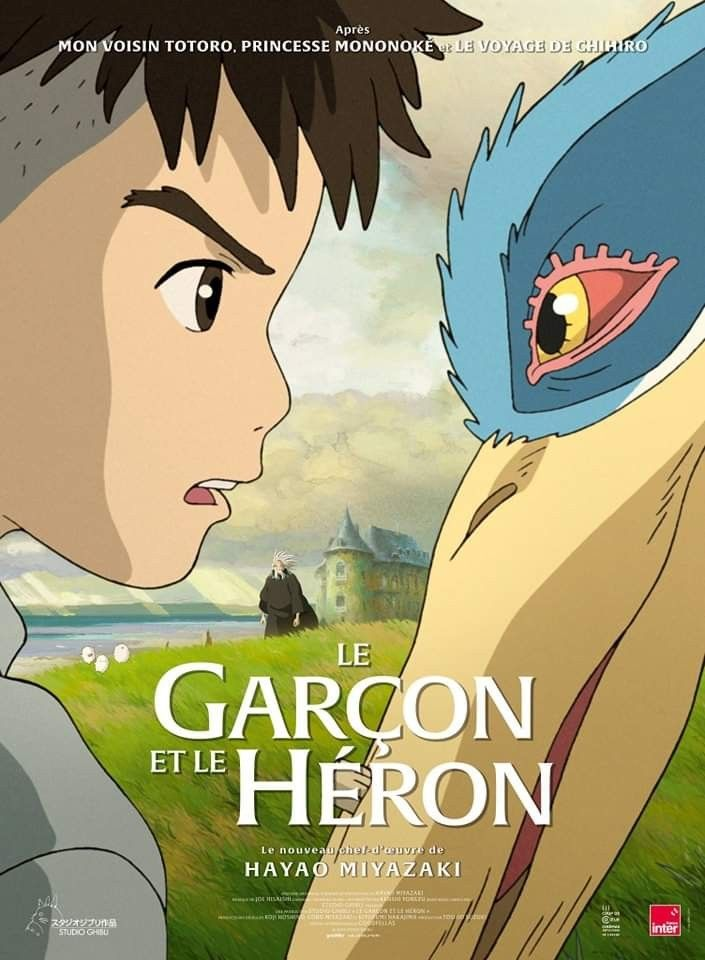
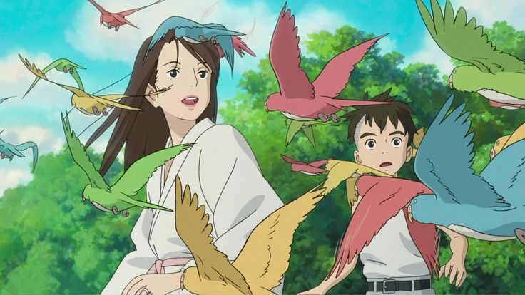
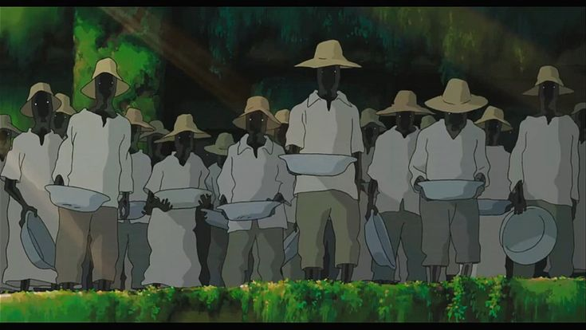
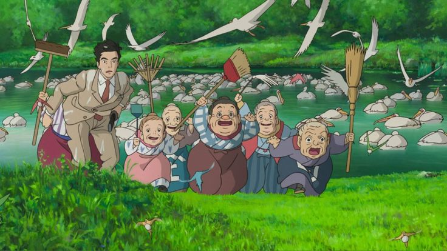
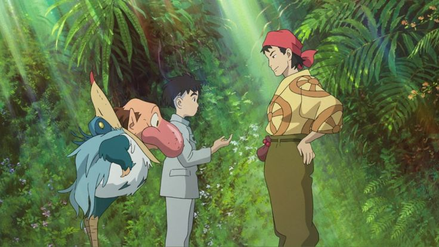
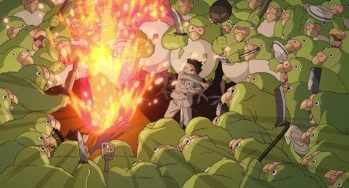
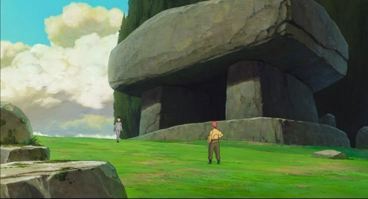

The Boy and the Heron
Під час Другої світової війни підліток Махіто, переслідуваний трагічною смертю матері, переїжджає з Токіо до тихого сільського будинку своєї нової мачухи Нацуко, жінки, яка має разючу схожість з матір'ю хлопчика. Поки він намагається пристосуватися, цей дивний новий світ стає ще дивнішим після появи настирливої сірої чаплі, яка спантеличує і дошкуляє Махіто, охрестивши його "довгоочікуваним"






"Народжений літати, ходити не може!"